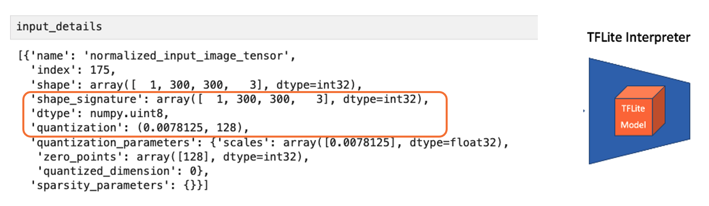
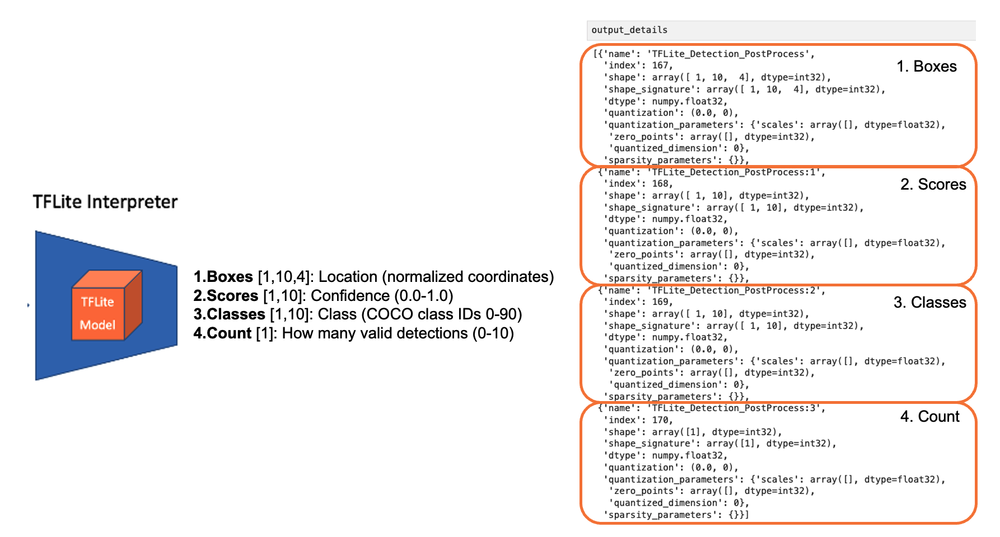
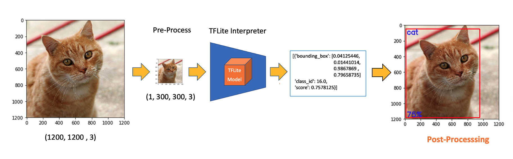
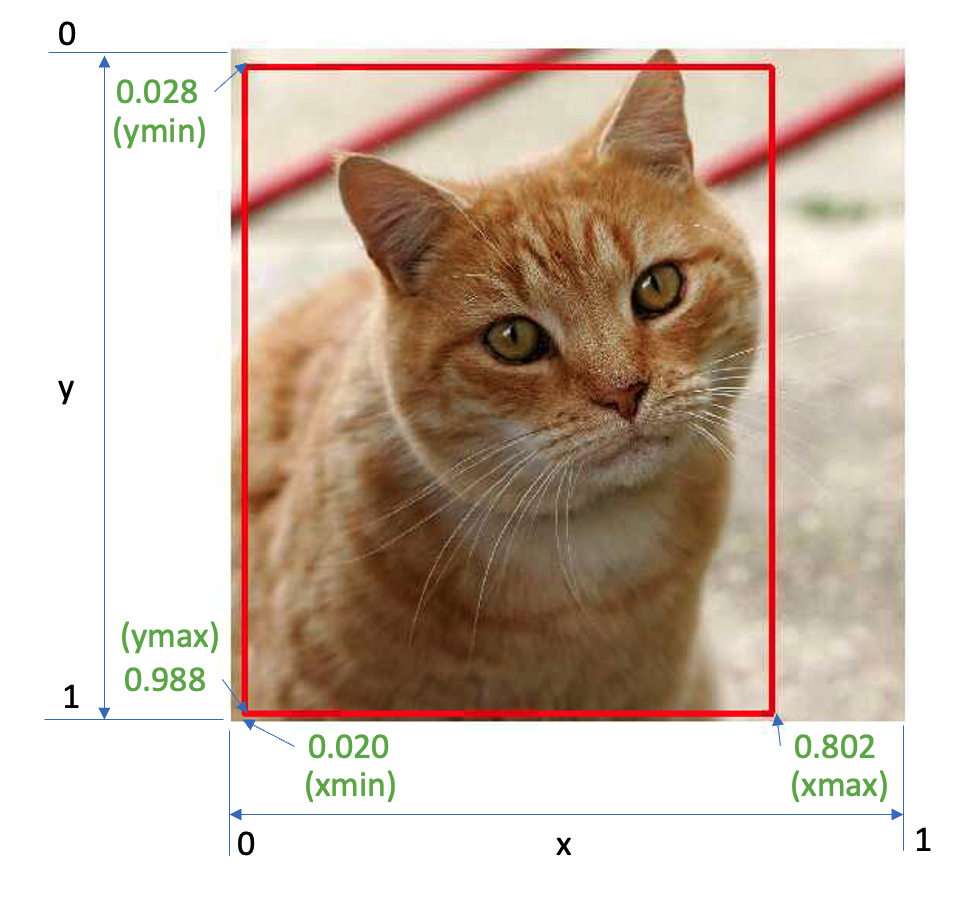
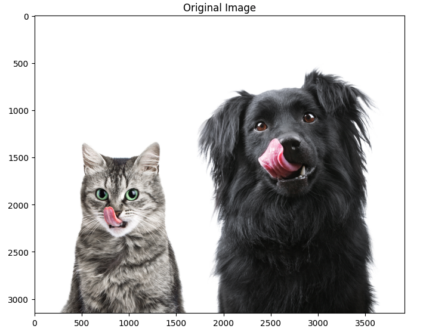
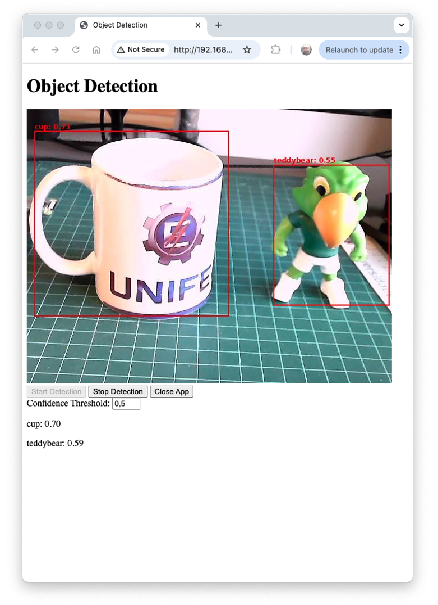

Object Detection: Fundamentals

Introduction
Building upon our exploration of image classification, we now turn our attention to a more advanced computer vision task: object detection. While image classification assigns a single label to an entire image, object detection goes further by identifying and locating multiple objects within a single image. This capability opens up many new applications and challenges, particularly in edge computing and IoT devices like the Raspberry Pi.
Object detection combines the tasks of classification and localization. It not only determines what objects are present in an image but also pinpoints their locations by, for example, drawing bounding boxes around them. This added complexity makes object detection a more powerful tool for understanding visual scenes, but it also requires more sophisticated models and training techniques.
In edge AI, where we work with constrained computational resources, implementing efficient object detection models becomes crucial. The challenges we faced with image classification—balancing model size, inference speed, and accuracy—are even more pronounced in object detection. However, the rewards are also more significant, as object detection enables more nuanced and detailed analysis of visual data.
Some applications of object detection on edge devices include:
- Surveillance and security systems
- Autonomous vehicles and drones
- Industrial quality control
- Wildlife monitoring
- Augmented reality applications
As we put our hands into object detection, we’ll build upon the concepts and techniques we explored in image classification. We’ll examine popular object detection architectures designed for efficiency, such as:
- Single Stage Detectors, such as MobileNet and EfficientDet,
- FOMO (Faster Objects, More Objects), and
- YOLO (You Only Look Once).
To learn more about object detection models, follow the tutorial A Gentle Introduction to Object Recognition With Deep Learning.
We will explore those object detection models using:
- TensorFlow Lite Runtime (now changed to LiteRT),
- Edge Impulse Linux Python SDK and
- Ultralitics
Throughout this lab, we’ll cover the fundamentals of object detection and how it differs from image classification. We’ll also learn how to train, fine-tune, test, optimize, and deploy popular object detection architectures using a dataset created from scratch.
Object Detection Fundamentals
Object detection builds upon the foundations of image classification but extends its capabilities significantly. To understand object detection, it’s crucial first to recognize its key differences from image classification:
Image Classification vs. Object Detection
Image Classification:
- Assigns a single label to an entire image
- Answers the question: “What is this image’s primary object or scene?”
- Outputs a single class prediction for the whole image
Object Detection:
- Identifies and locates multiple objects within an image
- Answers the questions: “What objects are in this image, and where are they located?”
- Outputs multiple predictions, each consisting of a class label and a bounding box
To visualize this difference, let’s consider an example:
This diagram illustrates the critical difference: image classification provides a single label for the entire image, while object detection identifies multiple objects, their classes, and their locations within the image.
Key Components of Object Detection
Object detection systems typically consist of two main components:
Object Localization: This component identifies the location of objects within the image. It typically outputs bounding boxes, rectangular regions encompassing each detected object.
Object Classification: This component determines the class or category of each detected object, similar to image classification but applied to each localized region.
Challenges in Object Detection
Object detection presents several challenges beyond those of image classification:
- Multiple objects: An image may contain multiple objects of various classes, sizes, and positions.
- Varying scales: Objects can appear at different sizes within the image.
- Occlusion: Objects may be partially hidden or overlapping.
- Background clutter: Distinguishing objects from complex backgrounds can be challenging.
- Real-time performance: Many applications require fast inference times, especially on edge devices.
Approaches to Object Detection
There are two main approaches to object detection:
Two-stage detectors: These first propose regions of interest and then classify each region. Examples include R-CNN and its variants (Fast R-CNN, Faster R-CNN).
Single-stage detectors: These predict bounding boxes (or centroids) and class probabilities in one forward pass of the network. Examples include YOLO (You Only Look Once), EfficientDet, SSD (Single Shot Detector), and FOMO (Faster Objects, More Objects). These are often faster and more suitable for edge devices, such as the Raspberry Pi.
Evaluation Metrics
Object detection uses different metrics compared to image classification:
- Intersection over Union (IoU) is a metric used to evaluate the accuracy of an object detector. It measures the overlap between two bounding boxes: the Ground Truth box (the manually labeled correct box) and the Predicted box (the box generated by the object detection model). The IoU value is calculated by dividing the area of the Intersection (the overlapping area) by the area of the Union (the total area covered by both boxes). A higher IoU value indicates a better prediction.
- Mean Average Precision (mAP) is a widely used metric for evaluating the performance of object detection models. It provides a single number that reflects a model’s ability to accurately both classify and localize objects. The “mean” in mAP refers to the average taken over all object classes in the dataset. The “average precision” (AP) is calculated for each class, and then these AP values are averaged to get the final mAP score. A high mAP score indicates that the model is excellent at identifying all objects and placing a tight-fitting, accurate bounding box around them.
- Frames Per Second (FPS): Measures detection speed, crucial for real-time applications on edge devices.
Pre-Trained Object Detection Models Overview
As we saw in the introduction, given an image or a video stream, an object detection model can identify which of a known set of objects might be present and provide information about their positions within the image.
You can test some common models online by visiting Object Detection - MediaPipe Studio
On Kaggle, we can find the most common pre-trained TFLite models to use with the Raspberry Pi, ssd_mobilenet_v1, and efficiendet. Those models were trained on the COCO (Common Objects in Context) dataset, with over 200,000 labeled images in 91 categories.
Download the models and upload them to the ./models folder on the Raspberry Pi.
Alternatively, you can find the models and the COCO labels on GitHub.
For the first part of this lab, we will focus on a pre-trained 300x300 SSD-Mobilenet V1 model and compare it with the 320x320 EfficientDet-lite0, also trained using the COCO 2017 dataset. Both models were converted to a TensorFlow Lite format (4.2MB for the SSD Mobilenet and 4.6MB for the EfficientDet).
SSD-Mobilenet V2 or V3 is recommended for transfer learning projects, but once the V1 TFLite model is publicly available, we will use it for this overview.
The model outputs up to ten detections per image, including bounding boxes, class IDs, and confidence scores.
Setting Up the TFLite Environment
We should confirm the steps done on the last Hands-On Lab, Image Classification, as follows:
Updating the Raspberry Pi
Installing Required Libraries
Setting up a Virtual Environment (Optional but Recommended)
source ~/tflite/bin/activateInstalling TensorFlow Lite Runtime
Installing Additional Python Libraries (inside the environment)
Creating a Working Directory:
Considering that we have created the Documents/TFLITE folder in the last Lab, let’s now create the specific folders for this object detection lab:
cd Documents/TFLITE/
mkdir OBJ_DETECT
cd OBJ_DETECT
mkdir images
mkdir models
cd modelsInference and Post-Processing
Let’s start a new notebook to follow all the steps to detect objects in an image:
Import the needed libraries:
import time
import numpy as np
import matplotlib.pyplot as plt
from PIL import Image
import tflite_runtime.interpreter as tfliteLoad the TFLite model and allocate tensors:
model_path = "./models/ssd-mobilenet-v1-tflite-default-v1.tflite"
interpreter = tflite.Interpreter(model_path=model_path)
interpreter.allocate_tensors()Get input and output tensors.
input_details = interpreter.get_input_details()
output_details = interpreter.get_output_details()Input details will inform us how the model should be fed with an image. The shape of (1, 300, 300, 3) with a dtype of uint8 tells us that a non-normalized (pixel value range from 0 to 255) image with dimensions (300x300x3) should be input one by one (Batch Dimension: 1).

The output details include not only the labels (“classes”) and probabilities (“scores”) but also the relative window position of the bounding boxes (“boxes”) about where the object is located on the image and the number of detected objects (“num_detections”). The output details also tell us that the model can detect a maximum of 10 objects in the image.

So, for the above example, using the same cat image used with the Image Classification Lab, looking for the output, we have a 76% probability of having found an object with a class ID of 16 on an area delimited by a bounding box of [0.028011084, 0.020121813, 0.9886069, 0.802299]. Those four numbers are related to ymin, xmin, ymax, and xmax, the box coordinates.

Considering that y ranges from the top (ymin) to the bottom (ymax) and x ranges from left (xmin) to right (xmax), we have, in fact, the coordinates of the top-left corner and the bottom-right one. With both edges and knowing the shape of the picture, it is possible to draw a rectangle around the object, as shown in the figure below:

Next, we should find what class ID 16 means. Opening the file coco_labels.txt, as a list, each element has an associated index, and inspecting index 16, we get, as expected, cat. The probability is the value returned from the score.
Let’s now upload some images with multiple objects on them for testing.
img_path = "./images/cat_dog.jpeg"
orig_img = Image.open(img_path)
# Display the image
plt.figure(figsize=(8, 8))
plt.imshow(orig_img)
plt.title("Original Image")
plt.show()
Based on the input details, let’s pre-process the image, changing its shape and expanding its dimensions:
img = orig_img.resize((input_details[0]['shape'][1],
input_details[0]['shape'][2]))
input_data = np.expand_dims(img, axis=0)
input_data.shape, input_data.dtype The new input_data shape is(1, 300, 300, 3) with a dtype of uint8, which is compatible with what the model expects.
Using the input_data, let’s run the interpreter, measure the latency, and get the output:
start_time = time.time()
interpreter.set_tensor(input_details[0]['index'], input_data)
interpreter.invoke()
end_time = time.time()
inference_time = (end_time - start_time) * 1000 # Convert to milliseconds
print ("Inference time: {:.1f}ms".format(inference_time))With a latency of around 800ms, we can get four distinct outputs:
boxes = interpreter.get_tensor(output_details[0]['index'])[0]
classes = interpreter.get_tensor(output_details[1]['index'])[0]
scores = interpreter.get_tensor(output_details[2]['index'])[0]
num_detections = int(interpreter.get_tensor(output_details[3]['index'])[0])On a quick inspection, we can see that the model detected two objects with a score over 0.5:
for i in range(num_detections):
if scores[i] > 0.5: # Confidence threshold
print(f"Object {i}:")
print(f" Bounding Box: {boxes[i]}")
print(f" Confidence: {scores[i]}")
print(f" Class: {classes[i]}")
And we can also visualize the results:
plt.figure(figsize=(12, 8))
plt.imshow(orig_img)
for i in range(num_detections):
if scores[i] > 0.5: # Adjust threshold as needed
ymin, xmin, ymax, xmax = boxes[i]
(left, right, top, bottom) = (xmin * orig_img.width,
xmax * orig_img.width,
ymin * orig_img.height,
ymax * orig_img.height)
rect = plt.Rectangle((left, top), right-left, bottom-top,
fill=False, color='red', linewidth=2)
plt.gca().add_patch(rect)
class_id = int(classes[i])
class_name = labels[class_id]
plt.text(left, top-10, f'{class_name}: {scores[i]:.2f}',
color='red', fontsize=12, backgroundcolor='white')
The choice of the
confidence thresholdis crucial. For example, changing it to0.2will show false positives. A proper code should handle it.
EfficientDet
EfficientDet is not technically an SSD (Single Shot Detector) model, but it shares some similarities and builds upon ideas from SSD and other object detection architectures:
- EfficientDet:
- Developed by Google researchers in 2019
- Uses EfficientNet as the backbone network
- Employs a novel bi-directional feature pyramid network (BiFPN)
- It uses compound scaling to scale the backbone network and the object detection components efficiently.
- Similarities to SSD:
- Both are single-stage detectors, meaning they perform object localization and classification in a single forward pass.
- Both use multi-scale feature maps to detect objects at different scales.
- Key differences:
- Backbone: SSD typically uses VGG or MobileNet, while EfficientDet uses EfficientNet.
- Feature fusion: SSD uses a simple feature pyramid, while EfficientDet uses the more advanced BiFPN.
- Scaling method: EfficientDet introduces compound scaling for all components of the network
- Advantages of EfficientDet:
- Generally achieves better accuracy-efficiency trade-offs than SSD and many other object detection models.
- More flexible scaling enables a family of models with varying size-performance trade-offs.
While EfficientDet is not an SSD model, it can be seen as an evolution of single-stage detection architectures, incorporating more advanced techniques to improve efficiency and accuracy. When using EfficientDet, we can expect similar output structures to SSD (e.g., bounding boxes and class scores).
On GitHub, you can find another notebook exploring the EfficientDet model that we did with SSD MobileNet.
Object Detection on a live stream
The object detection models can also detect objects in real-time using a camera. The captured image should be the input for the trained and converted model. For the Raspberry Pi 4 or 5 with a desktop, OpenCV can capture the frames and display the inference result.
However, even without a desktop, creating a live stream with a webcam to detect objects in real-time is also possible. For example, let’s start with the script developed for the Image Classification app and adapt it for a Real-Time Object Detection Web Application Using TensorFlow Lite and Flask.
This app version should work for any TFLite models.
Verify if the model is in its correct folder, for example:
model_path = "./models/ssd-mobilenet-v1-tflite-default-v1.tflite"Download the Python script object_detection_app.py from GitHub.
Check the model and labels:
And on the terminal, run:
python object_detection_app.pyAfter starting, you should receive the message on the terminal (the IP is from my Raspberry):
* Running on http://192.168.4.210:5000
Press CTRL+C to quit
And access the web interface:
- On the Raspberry Pi itself (if you have a GUI): Open a web browser and go to
http://localhost:5000 - From another device on the same network: Open a web browser and go to
http://<raspberry_pi_ip>:5000(Replace<raspberry_pi_ip>with your Raspberry Pi’s IP address). For example:http://192.168.4.210:5000/
Here is a screenshot of the app running on an external desktop

Let’s see a technical description of the key modules used in the object detection application:
- TensorFlow Lite (tflite_runtime):
- Purpose: Efficient inference of machine learning models on edge devices.
- Why: TFLite offers reduced model size and optimized performance compared to full TensorFlow, which is crucial for resource-constrained devices like Raspberry Pi. It supports hardware acceleration and quantization, further improving efficiency.
- Key functions:
Interpreterfor loading and running the model,get_input_details()andget_output_details()for interfacing with the model.
- Flask:
- Purpose: Lightweight web framework for building backend servers.
- Why: Flask’s simplicity and flexibility make it ideal for rapidly developing and deploying web applications. It’s less resource-intensive than larger frameworks suitable for edge devices.
- Key components: route decorators for defining API endpoints,
Responseobjects for streaming video,render_template_stringfor serving dynamic HTML.
- Picamera2:
- Purpose: Interface with the Raspberry Pi camera module.
- Why: Picamera2 is the latest library for controlling Raspberry Pi cameras, offering improved performance and features over the original Picamera library.
- Key functions:
create_preview_configuration()for setting up the camera,capture_file()for capturing frames.
- PIL (Python Imaging Library):
- Purpose: Image processing and manipulation.
- Why: PIL provides a wide range of image processing capabilities. It’s used here to resize images, draw bounding boxes, and convert between image formats.
- Key classes:
Imagefor loading and manipulating images,ImageDrawfor drawing shapes and text on images.
- NumPy:
- Purpose: Efficient array operations and numerical computing.
- Why: NumPy’s array operations are much faster than pure Python lists, which is crucial for efficiently processing image data and model inputs/outputs.
- Key functions:
array()for creating arrays,expand_dims()for adding dimensions to arrays.
- Threading:
- Purpose: Concurrent execution of tasks.
- Why: Threading enables simultaneous frame capture, object detection, and web server operation, which is crucial for maintaining real-time performance.
- Key components:
Threadclass creates separate execution threads, and Lock is used for thread synchronization.
- io.BytesIO:
- Purpose: In-memory binary streams.
- Why: Allows efficient handling of image data in memory without needing temporary files, improving speed and reducing I/O operations.
- time:
- Purpose: Time-related functions.
- Why: Used for adding delays (
time.sleep()) to control frame rate and for performance measurements.
- jQuery (client-side):
- Purpose: Simplified DOM manipulation and AJAX requests.
- Why: It makes it easy to update the web interface dynamically and communicate with the server without page reloads.
- Key functions:
.get()and.post()for AJAX requests, DOM manipulation methods for updating the UI.
Regarding the main app system architecture:
- Main Thread: Runs the Flask server, handling HTTP requests and serving the web interface.
- Camera Thread: Continuously captures frames from the camera.
- Detection Thread: Processes frames through the TFLite model for object detection.
- Frame Buffer: Shared memory space (protected by locks) storing the latest frame and detection results.
And the app data flow, we can describe in short:
- Camera captures frame → Frame Buffer
- Detection thread reads from Frame Buffer → Processes through TFLite model → Updates detection results in Frame Buffer
- Flask routes access Frame Buffer to serve the latest frame and detection results
- Web client receives updates via AJAX and updates UI
This architecture enables efficient, real-time object detection while maintaining a responsive web interface on a resource-constrained edge device, such as a Raspberry Pi. Threading and efficient libraries, such as TFLite and PIL, enable the system to process video frames in real-time, while Flask and jQuery provide a user-friendly way to interact with them.
You can test the app with another pre-processed model, such as the EfficientDet, by changing the app line:
model_path = "./models/lite-model_efficientdet_lite0_detection_metadata_1.tflite"If we want to use the app for the SSD-MobileNetV2 model, trained on Edge Impulse Studio with the “Box versus Wheel” dataset, the code should also be adapted depending on the input details, as we have explored in its notebook.
Conclusion
This lab has explored the implementation of object detection on edge devices like the Raspberry Pi, demonstrating the power and potential of running advanced computer vision tasks on resource-constrained hardware. We examined the object detection models SSD-MobileNet and EfficientDet, comparing their performance and trade-offs on edge devices.
The lab exemplified a real-time object detection web application, demonstrating how these models can be integrated into practical, interactive systems.
The ability to perform object detection on edge devices opens up numerous possibilities across various domains, including precision agriculture, industrial automation, quality control, smart home applications, and environmental monitoring. By processing data locally, these systems can offer reduced latency, improved privacy, and operation in environments with limited connectivity.
Looking ahead, potential areas for further exploration include: - Using a custom dataset (labeled on Roboflow), walking through the process of training models using Edge Impulse Studio and Ultralytics, and deploying them on Raspberry Pi. - To improve inference speed on edge devices, explore various optimization methods, such as model quantization (TFLite int8) and format conversion (e.g., to NCNN). - Implementing multi-model pipelines for more complex tasks - Exploring hardware acceleration options for Raspberry Pi - Integrating object detection with other sensors for more comprehensive edge AI systems - Developing edge-to-cloud solutions that leverage both local processing and cloud resources
Object detection on edge devices can create intelligent, responsive systems that bring the power of AI directly into the physical world, opening up new frontiers in how we interact with and understand our environment.